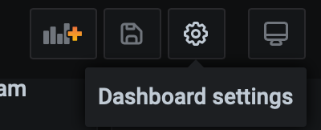
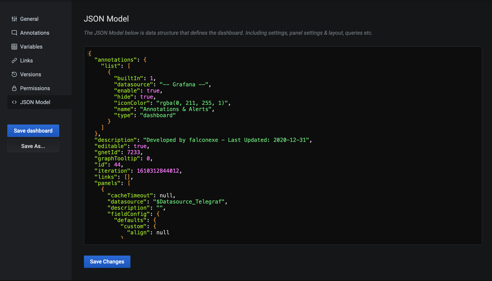
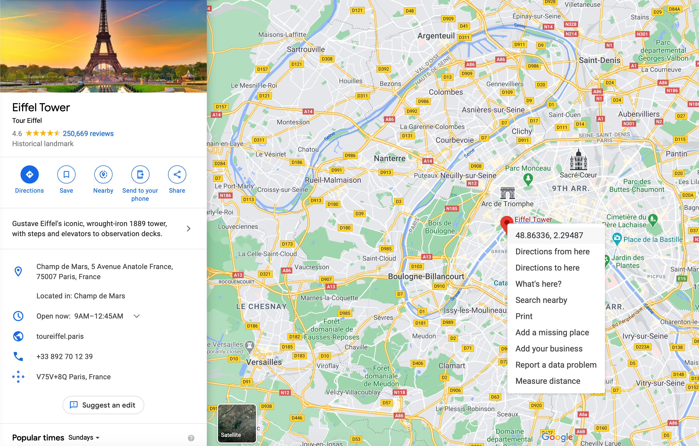
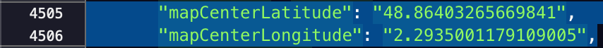
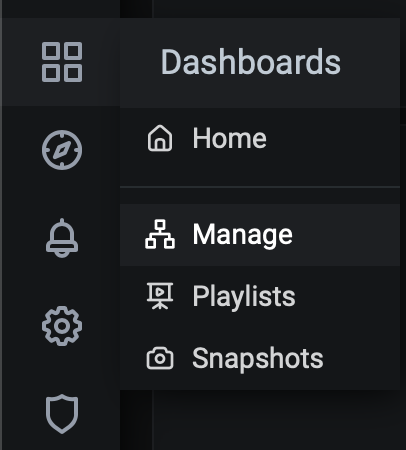
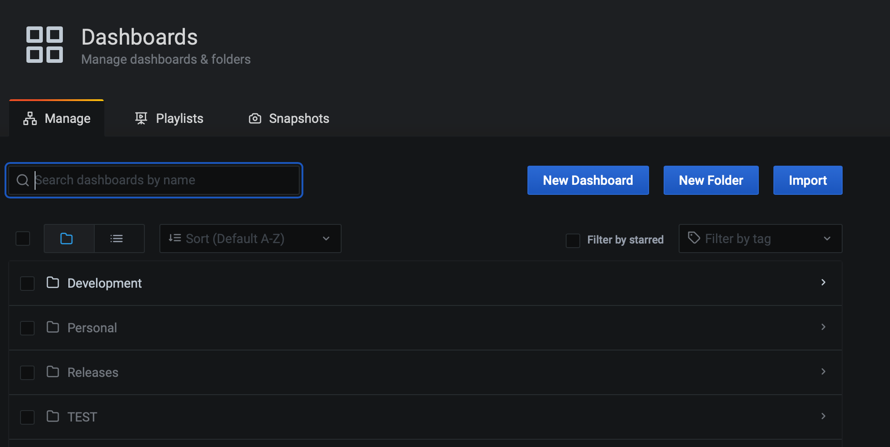
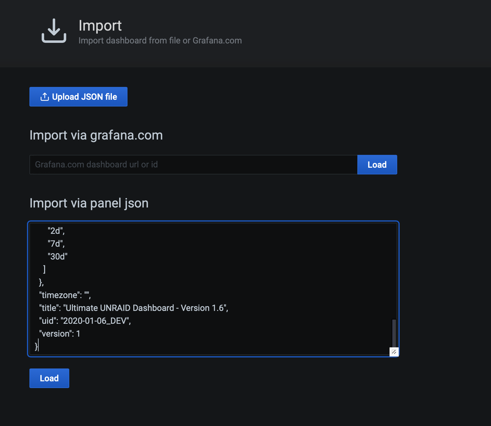
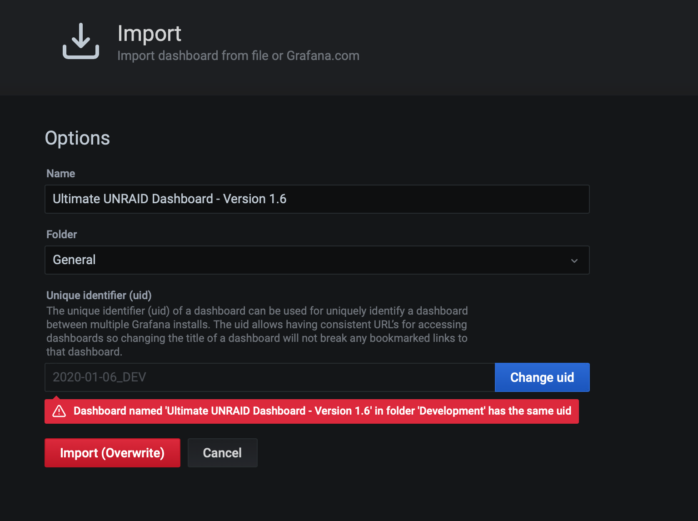
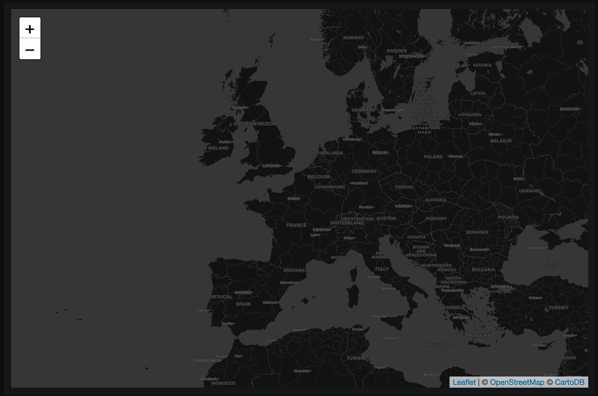

Questions and Answers
How can I change the default location of the map?
Click to expand
Go on to your UUD.
In the upper right corner, click on the dashboard settings denoted by the icon.

Next, click on JSON Model

Select all of the text and copy it in to your preferred text editor. Visual Studio Code is a good one for all platforms.
Search (CTRL+F) for mapCenterLatitude. Remove the numbers in between the 2nd set of quotes. Do the same for the line under it (mapCenterLongitude).
"mapCenterLatitude": "37.9",
"mapCenterLongitude": "-94.9",
Should become
"mapCenterLatitude": "",
"mapCenterLongitude": "",
Next head on over to Google Maps. Set a pin to where you want your new center to be. Right click the pin to see the coordinates. In this example I am using the Eiffel Tower. Click the coordinates and Google Maps will send them to your clipboard.

Put the new coordinates into the mapCenterLatitude (left coordinate) and mapCenterLongitude (right coordinate) variables.

Now select all and copy all of the JSON code from your text/code editor.
Next go back into Grafana, click the arrow in the upper left () to back out of the previous JSON Model screen, and then click the Dashboards button. Then select Manage.

Next, you are going click the Import button.

Then paste your modified JSON code into the following screen.

Finally, hit Load and give it a NAME, and a NEW UID by clicking the Change uid button, and save it in the folder of your choosing.

Now open your new modified dashboard and you will see that the map is now centered on the location of your choosing!
